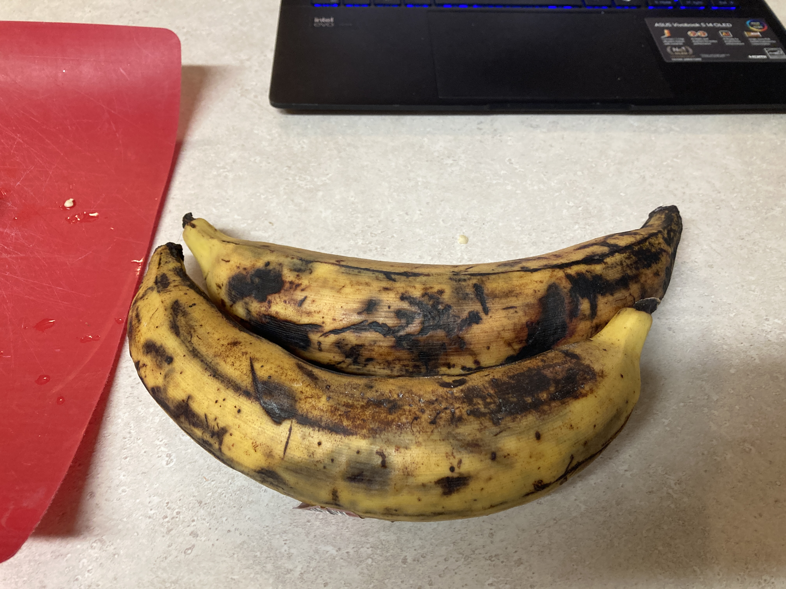
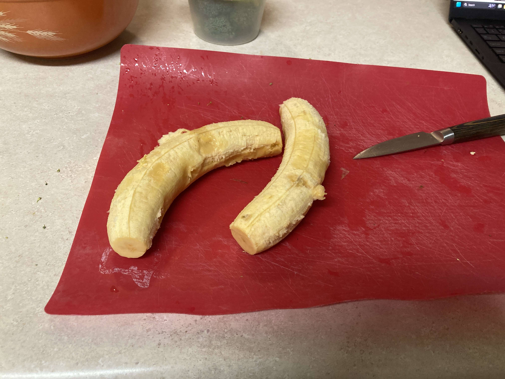
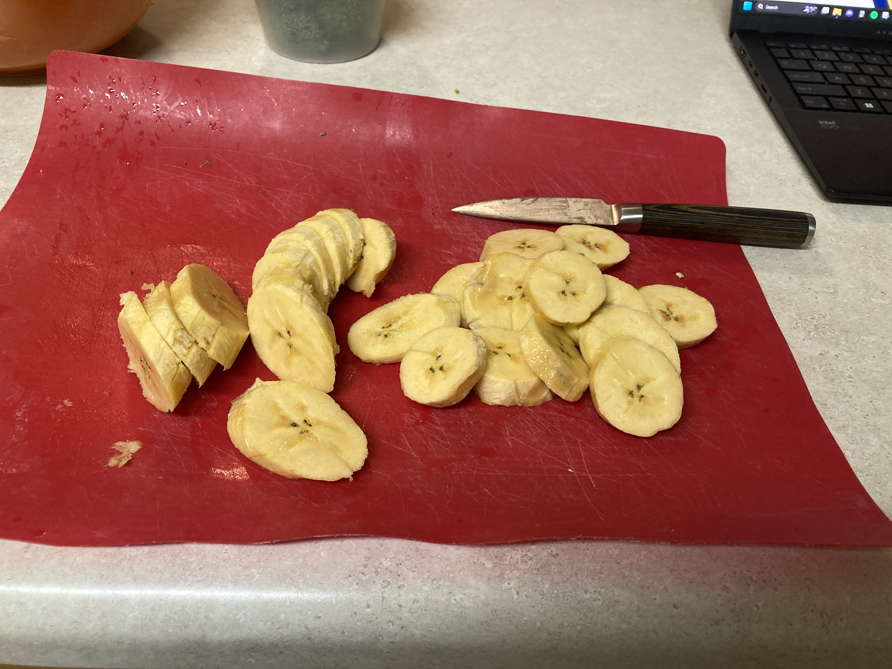
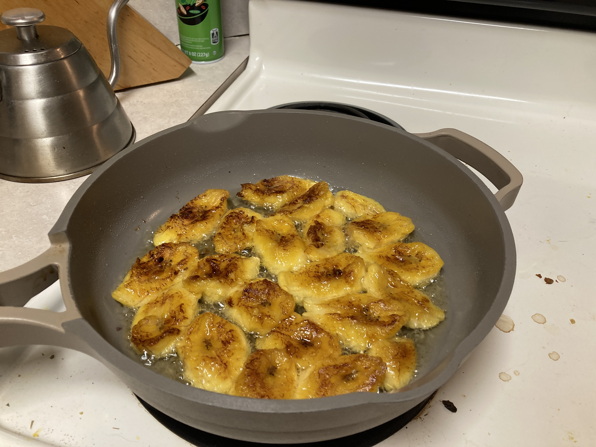

Cuba: Plátanos Maduros (Fried Plantains)
2025-09-23Recipe is from Jamie Silva.
Taste:⭐⭐⭐⭐/5
Fun Factor: 🎉🎉🎉/5
Accessibility: 🛒🛒🛒🛒🛒/5
Exoticity: ✈️✈️✈️/5
Plantains (or cooking bananas) are eaten as a staple in many tropical countries around the world. Wherever plantains are eaten, they are fried. After cooking this dish, I get it.
The center of diversity for bananas is South-East Asia, where wild bananas were first cultivated. West Africans brought them to Latin America as part of the Columbian Exchange. Even today, plantains are particularly important in areas with lots of African heritage.
If you've never bought plantains before, pick some up next time you go shopping. I got these from Walmart. They cost a bit more than dessert bananas, but are still very cheap and last longer. Plantains have thicken peels which are bound more tightly to the
  Other Cuban dishes we'd like to make sometime: vaca frita (fried shredded beef), pollo asado (grilled chicken), frijoles colorados (red beans).